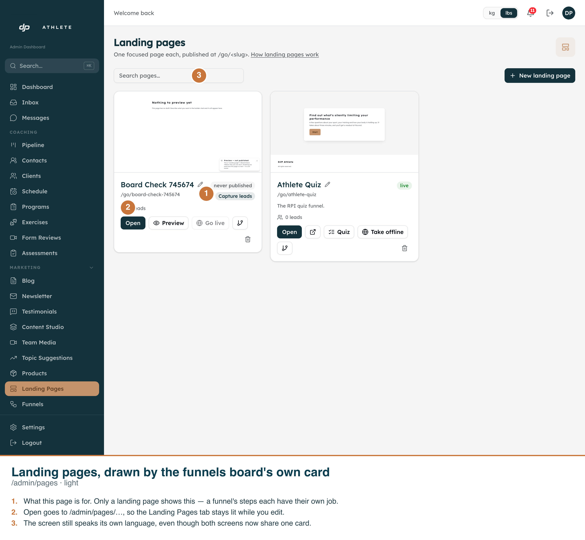
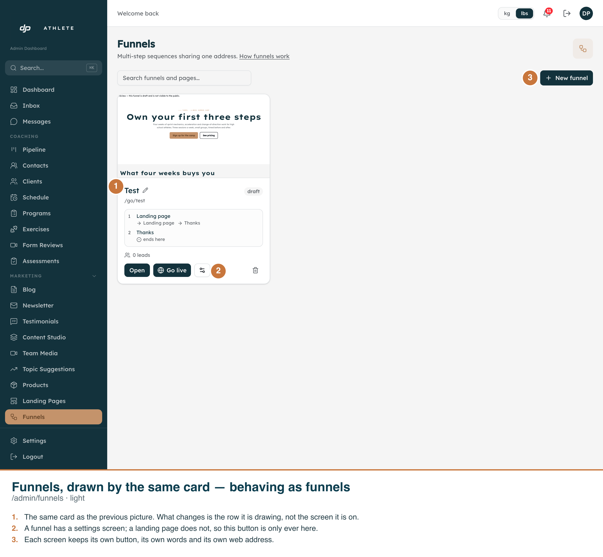

Both frames are the real app on its real route, driven by
scripts/capture-one-board.ts. The callouts are burned into each PNG.
Asserted in the DOM before each shot, on the dev copy (anjvztjiokcgiyhobknq):
/admin/pages renders
[data-testid="funnel-card"] — the funnels board's own card. That is the change.getByText("Capture leads").count() === 0 on the funnels board. Asserted in both
directions across the two shots, because an absence proves nothing without the presence.a[href="/admin/pages/<id>"] nor a[href="/admin/funnels/<id>"]
appears on a landing page card; a funnel card has one./admin/pages/<id>/edit/. Both routes serve a page — the funnels one redirects —
so a wrong link works and merely lights the wrong tab. That is the defect
adminFunnelBase exists to prevent, and the one this merge nearly reintroduced.goal: null and so cannot show the badge —
asserting against data that cannot answer would have proved nothing.Two bugs the merge exposed, both found by retargeting the deleted board's tests rather than deleting them:
FunnelCard hardcoded /admin/funnels/<id>/edit/<step>. Invisible
until the pages board rendered this card.FunnelList's delete said "Funnel deleted." and asked about
"all of its pages". A landing page IS a funnels row, so it goes through the same endpoint,
and a message written from the endpoint names a thing the owner has never seen. This had already
shipped once and been fixed on the old board; the fix now lives where it survives the board being
replaced.Not changed, on purpose: there is no migration. funnels.kind stays. The model —
one table, one shape, one renderer, one flag — was already sound; the confusion was two components
that drifted.

/admin/pages. Two real landing pages: one just created (goal badge, never published) and the
seeded Athlete Quiz (live, carrying its Quiz button). Neither offers a settings screen, and neither draws
a step-list box — a one-step row's single step is the card.
/admin/funnels. The same component, drawing a two-step funnel: its steps are listed inside
the card with what leads where, there is no goal badge, and the ⚙ settings button is present. What
changed between these two frames is the row being drawn, not the screen it is on.